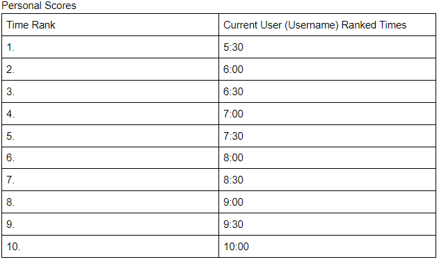
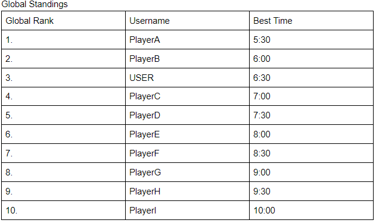
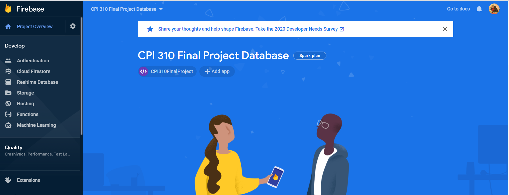

The purpose of our website will be to design a functional website to host an online game
where users have the ability to create an account for said website, and use the account to
play the hosted game, return to a created "save point" using some generated code,
and time permitting, check their own statistics from the game and compare them to that of other users.
The game itself will consist of at the very least one level, with more added if time permits.
The website will be developed using HTML, CSS, Javascript, and Bootstrap, and will consist of:
A user login/account page link/area on the "main" page of the website
The aforementioned account page including, but not limited to:
Progress made by the user in the game, along with any statistics of said progress
User information including, but not limited to:
Username
Email associated with the account
Password(protected under modest security)
Date the account had been created
A "standings" page that allows the user to view:
A personal high score list, comparing the statistics of one "local" run (a run by the user) to other local runs

If time permits, a global high score list, comparing the user's best local run against other users' best local run

Back End
The server to hold the data and progress of users will be developed using Node.js.
The database for the information provided by the game and by users will be developed using MySQL, and possibly Google Firebase
Further inforation on the layout and design of the database will be provided in Database Design.

Use Case Analysis
The following graphic will demonstrate the Use Case Analysis we tend to follow moving forward with this project, but it may be subject to change as time allows for more/less features.
The following graphic will demonstrate the Database Design we will use in constructing our database, but it may be subject to change as time allows for more/less features.